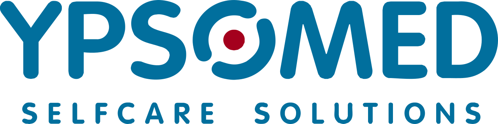
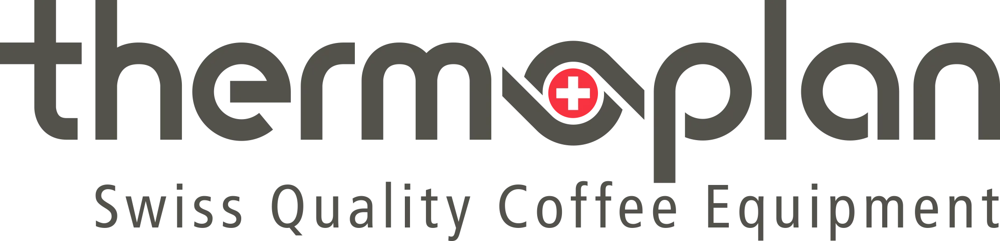
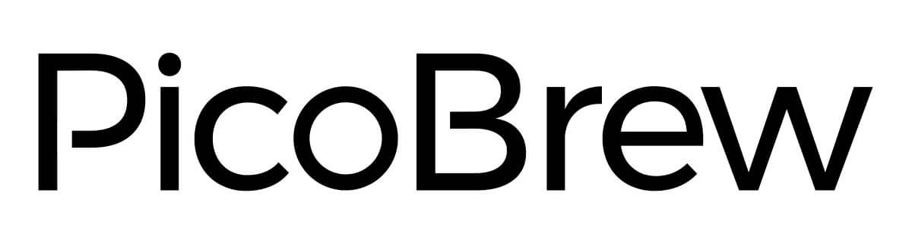

Application · Senior Everyday AI Specialist · Swiss Post Ref. 73495
Matteo Trachsel
Product manager & hands-on AI builder — I turn AI capability into everyday value.
For nine years I've translated real needs into shipped products — from IoT hardware to a portfolio of AI apps (GPT agents, computer vision, automation), and today as a product manager at Ypsomed. I lead projects from idea to product-market fit, align stakeholders across an organisation, and make complex technology tangible for the people who use it. Exactly the loop Swiss Post needs to take Microsoft 365 Copilot from rollout to lasting adoption.
Based in Bern — open to Bern, Bellinzona, Lausanne, Neuchâtel & home office.
Mapped one-to-one to the job description. Tap a card to see the proof.
02 Experience
From engineering to AI-led innovation.
Filter by theme, or expand any role for detail.

Y
Product Manager — Autoinjectors
Ypsomed AG · Bern
02.2026 – present+
Product manager for self-injection devices (autoinjectors) at Ypsomed — a leading Swiss medical-technology company in drug-delivery systems.
Product ownership: Drive the product lifecycle of autoinjector platforms in close collaboration with R&D, quality, regulatory and supply chain.
User-centric: Translate patient and pharma-partner needs into clear product requirements — bringing the same validate-fast, evidence-led approach to a regulated MedTech environment.
Product managementMedTechCross-functional

T
Head of Business Innovation & Sustainability
Thermoplan AG
06.2024 – 01.2026+
Extended my prior role with ownership of business-model innovation and market-side innovation projects.
Strategy: Built & lead the new Business Innovation Center, steering strategic innovation from idea to product-market fit.
Team: Built and lead an interdisciplinary team focused on collaborative innovation methods and fast time-to-market.
Market expansion: Led a product-extension project for the Chinese tea market — PMF in 4 months via agile prototyping, resulting in 60 machine sales and store pilots, then handed to the R&D process.
Innovation strategyMVP / PMFTeam leadership
T
Head of Sustainability
Thermoplan AG
07.2021 – 06.2024+
Project lead (2024–2027): Led the Innosuisse-funded "Circulus" programme (CHF 8.1M budget) for holistic circular-economy implementation.
Strategy: Developed & launched the first company-wide sustainability strategy with an SBTi-aligned decarbonisation plan and net-zero-2050 KPIs.
Team: Established a cross-departmental sustainability leadership team using Scrum to improve collaboration and accountability.
Stakeholders: Direct communication with key stakeholders and customers to harmonise sustainability and business goals.
Automation: Built an automated emissions-accounting system with interactive data visualisations (Python) — driving a 93,000 t CO₂e reduction across Scope 1–3 in 4 years.
Reporting: Ran LCAs and built an interactive Product Environmental Report (report.thermoplan.ch) — a top-10 company site, used in every tender.
Stakeholder mgmtPython automationData vizScrum
T
Research Engineer
Thermoplan AG
05.2020 – 07.2021+
Automation: Designed & built an automatic measurement and visualisation program in Python for enthalpy-flow measurement in coffee machines.
Impact: Optimised processes for a major customer, saving over 4,000 t CO₂e per year.
PythonMeasurement & viz
V
Co-founder
Vapporio GmbH
07.2018 – 09.2020+
Product: Developed a patentable instant-steam module for coffee machines with automatic milk frothing and up to 80% energy savings.
Go-to-market: Concept to customer tests in 2 months; secured innovation funding via the Coffee Excellence Center (ZHAW).
Business development: be-advanced Challenge Accelerator; refined product strategy through many pivots driven by customer feedback.
Consulting: Long-term module tests with one of the largest coffee-machine makers; customer surveys, patent research and cost optimisation.
0→1 productPivotsConsulting

P
Mechanical Engineer
PicoBrew Inc., Seattle (USA)
06.2017 – 05.2018+
Project lead: End-to-end development of a patentable IoT fermentation monitor for home brewers.
Coordination: Led an interdisciplinary team of 3 engineers and 20+ suppliers to market launch in 8 months.
China production: Supervised the first run of 5,000 units, coordinated zero-series production in China and secured quality standards.
IoTSupplier coordinationLaunch
P
Internships — Mechanical Engineering
PicoBrew (Seattle) · Thermoplan AG
01.2016 – 05.2017+
Mechanical-engineering internships in the USA and Switzerland — the hands-on foundation for building real products.
03 Everyday-AI in practice
I don't just talk AI — I ship it.
A self-built portfolio of AI & PWA apps, each solving a real, everyday need. Proof that I can turn AI capability into tools people actually use.